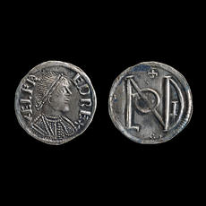

| |
The Department has
an impressive publication record, covering subjects as diverse as medals
of the Italian Renaissance and Romano-British coin hoards. In addition
to writing numerous articles for both academic and popular periodicals
and journals on coins and medals, members of the department write, edit
and contribute to more expansive works on history and archaeology. The
Department has followed a policy of publishing scholarly catalogues
of its extensive collections since the early 1800s.
The following list
provides a sample of some of the recent as well as forthcoming major
publications by members of the Department [see further reading]:
R A Abdy, Romano-British
Coin Hoards, Princes Risborough, 2002
R A Abdy, I M R Leins
and J H C Williams (eds.), Coin Hoards from Roman Britain XI,
London, 2002
M M Archibald and
B J Cook, English Medieval Coin Hoards: I Cross and Crosslet, Short
Cross and Long Cross hoards, British Museum Occasional Paper 87,
2001
P Attwood, British
Art Medals 1982-2002, London, 2002
P Attwood, Italian
Medals c.1530-1600 in British public collections, London, 2003
P Bagwell-Purefoy
and A R Meadows, Sylloge Nummorum Graecorum IX.2. The British Museum:
Spain, London, 2002
P Bibire and G Williams
(eds.), Sagas, Saints and Settlements, 2003
Vikram Chand & Joe
Cribb Ancient Indian Coins from the Chand Collection, Singapore,
2003, ISBN 981-04-9280-4
C Cheesman and J H
C Williams, Rebels, Pretenders and Impostors, London, 2000
C E A Cheesman and
J H C Williams, Classical Love Poetry, London 2004
BJ Cook and G. Williams,
Money and History in the North Sea World c. 500-1200, (forthcoming
2005)
J Cribb, Magic
Coins of Java, Bali and the Malay Peninsula: Thirteenth to twentieth
centuries, London, 1999
V Curtis and N Pazooki,
Aurel Stein and Bahman Karimi on Old Routes of Western Iran,
in H Wang (ed.) Sir Aurel Stein. Proceedings of the British Museum
Study Day 2002, British Museum Occasional Paper 142, London 2004,
pp. 23-28.
E Errington and
V S Curtis, From Perspolis to the Punjab. Early 19th Century Collectors
and Collections , London, 2005
E Errington, Discovering
ancient Afghanistan: The Masson Collection, Minerva 13/6, Nov/Dec
2002, pp. 53-5.
E Errington, Numismatic
evidence for dating the “Kanishka” reliquary’, Silk Road Art and
Archaeology 8, 2002, pp. 127-46.
E Errington, Charles
Masson and Begram, Topoi 11/1, 2001 [2003], pp. 357-409.
E Errington, A
survey of late hoards of Indian punch-marked coins, Numismatic Chronicle
2003, pp. 69-121.
E Errington, Charles
Masson, Encyclopaedia Iranica online, 2004.
J Falconer et al.,
Catalogue of the Collections of Sir Aurel Stein in the Library of
the Hungarian Academy of Sciences (eds. E Apor & H Wang), Budapest,
2002
J Graham-Campbell
and G Williams (eds.), Silver Economy in the Viking Age , 2003
A R Meadows and
K Shipton, Money and Its Uses in the Ancient Greek World, Oxford,
2001
A R Meadows and
U Wartenberg (eds.), Coin Hoards IX: Greek Hoards, London, 2002
A.R. Meadows and
R.T. Williams, Sylloge Nummorum Graecorum Volume XIII. Newcastle,
Society of Antiquaries Collection, 2005
A.R. Meadows and
R.W.C. Kan, History Re-stored. Ancient Greek Coins from the Zhuyuetang
Collection, Hong Kong, 2004
K Mousheghian et
al, History and Coin Finds in Armenia: Inventory of coins and hoards,
volume 1, Wetteren, 2002
K Mousheghian et
al, History and Coin Finds in Armenia: Inventory of coins and hoards,
volume 2, 2003
L Syson and D Thornton,
Objects of Virtue: Art in the Renaissance, London, 2001
L Syson and D Gordon,
Pisanello: Painter to the Renaissance court, London, 2001
H Wang (ed.), Handbook
to the Stein Collections in the UK, British Museum Occasional Paper
129, 1999
H Wang (ed.), Sir
Aurel Stein in the Times, London, 2002
H Wang (ed.), Sir
Aurel Stein. Proceedings of the British Museum Study Day 2002, British
Museum Occasional Paper 142, London 2004.
H Wang, Catalogue
of the Sir Aurel Stein Papers in the British Museum Central Archives,
in H Wang (ed.), Sir Aurel Stein. Proceedings of the British Museum
Study Day 2002, British Museum Occasional Paper 142, London 2004,
pp. 37-62.
H Wang, How much
for a camel: A new understanding of money on the Silk Road before AD
800, in S Whitfield (ed.), The Silk Road: Trade, Travel, War
and Faith, The British Library, London 2004, pp. 24-33.
H Wang, M Cowell,
J Cribb and S Bowman (eds), Metallurgical Analysis of Chinese Coins
at the British Museum, British Museum Research Paper 152, 2005
G Williams, Viking
Warfare and Military Organisation, (forthcoming, 2003)
J H C Williams,
Beyond the Rubicon: Romans and Gauls in Republican Italy, Oxford,
2001
|
|

Silver penny of Alfred the Great. Anglo-Saxon, AD 871-99. Kingdom of
Wessex, southern England.
|
|
|
|